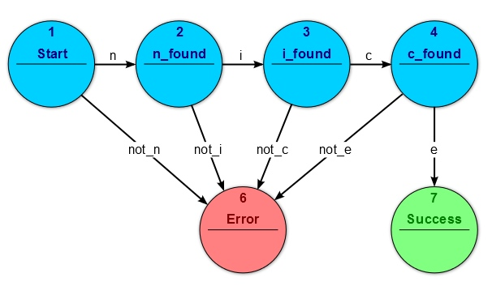
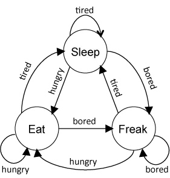
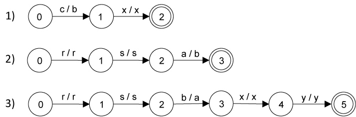
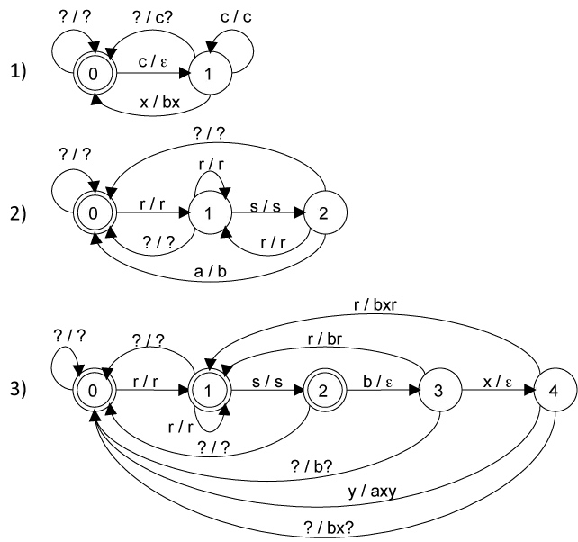
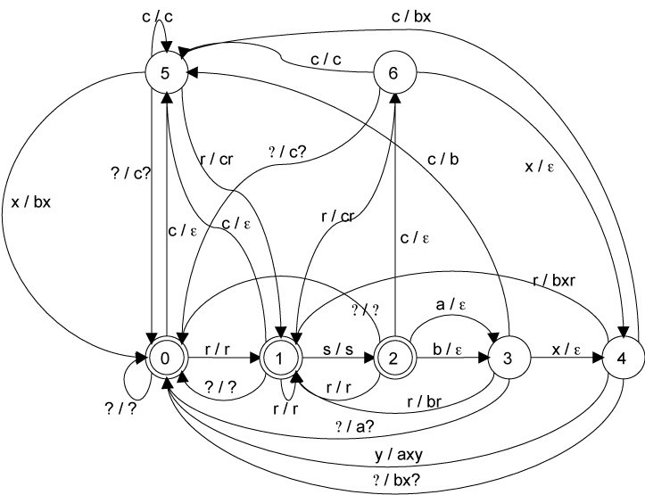
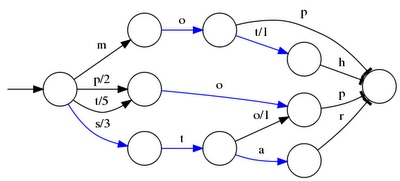

For Finite State Automata and Finite State Transducer and their application in NLP
FSA
This article is intended to help you bootstrap your ability to work with Finite State Automata (note automata == plural of automaton). Automata are a unique data structure, requiring a bit of theory to process and understand. Hopefully what’s below can give you a foundation for playing with these fun and useful Lucene data structures!
Motivation, Why Automata?
When working in search, a big part of the job is making sense of loosely-structured text. For example, suppose we have a list of about 1000 valid first names and 100,000 last names. Before ingesting data into a search application, we need to extract first and last names from free-form text.
Unfortunately the data sometimes has full names in the format “LastName, FirstName” like “Turnbull, Doug”. In other places, however, full names are listed “FirstName LastName” like “Doug Turnbull”. Add a few extra representations, and to make sense out of what strings represent valid names becomes a chore.
This becomes especially troublesome when we’re depending on these as natural identifiers for looking up or joining across multiple data sets. Each data set might textually represent the natural identifier in subtly different ways. We want to capture the representations across multiple data sets to ensure our join works properly.
So… Whats a text jockey to do when faced with such annoying inconsistencies?
You might initially think “regular expression”. Sadly, a normal regular expression can’t help in this case. Just trying to write a regular expression that allows a controlled vocabulary of 100k valid last names but nothing else is non-trivial. Not to mention the task of actually using such a regular expression.
But there is one tool that looks promising for solving this problem. Lucene 4.0’s new Automaton API. Lets explore what this API has to offer by first reminding ourselves about a bit of CS theory.
Theory — Finite State Automata and You!
Lucene’s Automaton API provides a way to create and use Finite State Automata(FSAs). For those who don’t remember their senior level computer science, FSA is a computational model whereby input symbols are read by the computer — the automaton — to drive a state machine. The state machine is simply a graph with nodes and labeled, directed edges. Each node in the graph is a state, and each edge is a transition labeled with a potential input symbol. By matching the current node’s edges to the current input symbol, the automaton follows edges to the next state. The next input symbol is read, and based on the transitions of the new state, we transition to yet another state, so-on and so-forth.
More importantly here, FSA’s are a way of specifying a Regular Language. If we think of all the input symbols as elements of a language, we can use an FSA to specify a language and determine if a given input string is valid for the language. We do this by processing the input string, following the transitions of an FSA until we reach a terminus node. If we exhaust the input symbols at such a node, then the string of symbols can be said to match the language. Otherwise, we can say the input string does not match the language.
So for example, in the figure below. The string “nice” that is the sequence of symbols “n”, “i”, “c”, “e” are accepted as a member of the language. All other strings are rejected:

An FSA specifying a language that accepts the word "nice"
A regular language could be just a set of valid strings. Or, it could be something a bit fuzzier like a Levenshtein distance or regular expression which as it turns out can be represented in a regular language. But even more powerfully, it can be a concatenation, union, or intersection of all of these.
In Practice — An Automaton as a data structure
In practice, Lucene automata are useful as as a data structure that bridges between a traditional Set<> and hand-written regular expression. When compared to a HashSet or TreeSet the memory representation (can be) much, much smaller, with very fast lookups. Moreover, Automata give you fuzzier features like regular expression matching.
Its not a general purpose set replacement, however. For an automaton, the set is all the strings of symbols that match the language. However, due to all the fuzzy matching potentially using “regular expressions” enumerating all the input strings that match the language, that is enumerating the members of the set, is non-trivial and might never terminate. Think about it this way, traversal involves manually traversing a graph, so every node, whether a terminus or not, must be visited. This traversal might never terminate because you could have a * regular expression. So enumerating the strings that match the language will involve infinitely repeating the pattern before the *.
Another factor to consider is that while lookup time and memory usage are much, much smaller when compared to a Set<>, indexing can be very time consuming. For the use case of creating an automaton up front to specify a relatively static language once this isn’t a big deal. But for data structures that change frequently, automatons shouldn’t be the first choice.
When compared to a regular expression, the Automaton lends itself to being able to hold more complex regular languages than the ones you could specify in a traditional regular expression. For example, it would be difficult to specify a regular expression that had 500,000 potential first names followed by 1,000 last names unioned with 1,000 last names, a comma, followed by one of 500,000 first names. That’s Perl that’s not even write only. Automaton’s give you the ability to effectively write an extremely rich and large a “regular expression” in readable code in a way that won’t make generating/parsing such a regular expression a giant chore.
Next, lets see how we actually build a useful automaton
Teh Codez — Building an Automaton
(Note all code below can be found at this github repo)
To show off the API, lets take the example we discussed at the outset. Lets say our language allows two forms of full names “FirstName LastName” and “LastName, FirstName”. For simplicity, lets validate only a set of names. First Names: {"Doug", "John"} and last names {"Berryman", "Turnbull"}. So in our world all the valid names are “Doug Berryman”, “Doug Turnbull”, “John Berryman”, and “John Turnbull”. Forms where last name comes first followed by a comma, followed by the first name (ie “Turnbull, Doug”) are also considered valid.
So how do we use the Lucene API to build at Automaton to validate this syntax?
There are two key classes that you’ll use over-and-over for building meaningful automata. First the BasicAutomata class provides static methods for constructing automata out of simple building blocks (in our case individual strings). Second the BasicOperations class provides utility methods for combining Automata into unions, intersections, or concatenations of other automata.
Outside of these two central classes, we can also fold in additional automata from other classes. For example, regular expressions via the RegExp class.
Ok, now lets actually start putting together some code. Lets first look at the form “FirstName LastName”. We want to specify a language that takes any of our first names {“John”, “Doug”}, followed by some number of whitespace characters, then followed by any of our last names {“Turnbull”, “Berryman”}.
Our first piece of code forms the foundation for all of our other automata. One of the basic automata we need to build is simply one built from a set of valid strings. For example, an automaton for last names that says “Turnbull” is valid, “Berryman” is valid, but “Pugh” is not.
As this task is going to be a pretty common, occurrence, we’ll be using this utility function that builds an automaton for accepting only the values from the passed in String array:
/**
* @param strs
* All the strings that we want to allow in the returned language
* @return
* An automaton that allows only the passed in strings
*/
public static Automaton stringUnionAutomaton(String[] strs) {
Automaton strUnion = null;
// Simply loop through the strings and place them in the automaton
for (String str: strs) {
// Basic building block, make an automaton that accepts a singl
// string
Automaton currStrAutomaton = BasicAutomata.makeString(str);
if (strUnion == null) {
strUnion = currStrAutomaton;
}
else {
// Combine the current string with the Automata for the
// previous string, saying that this new string is also valid
strUnion = BasicOperations.union(strUnion, currStrAutomaton);
}
}
return strUnion;
}
Notice how on every iteration, we create an automaton for the current string. The first iteration initializes the resulting automaton(strUnion) to the current string’s automata (currStrAutomaton'). On subsequent iterations, we set the resultingstrUnionto the union ofcurrStrAutomatonand itself. Finally returningstrUnion` as the union of all the strings passed in.
With this building block, we can build up a more complex Automaton for our FirstName LastName form:
/**
* @param firstNames
* Set of allowable first names
* @param lastNames
* Set of allowable last names
* @return
* An automaton that allows FirstName\s+LastName
*/
public static Automaton createFirstBeforeLastAutomaton(String[] firstNames, String[] lastNames) {
List<Automaton> allAutomatons = new ArrayList<Automaton>();
// Use our builder to create an automaton that allows all the first names
allAutomatons.add(stringUnionAutomaton(firstNames));
// Add in an Automaton that allows any whitespace by using
// the regular expression
RegExp anyNumberOfSpaces = new RegExp("[ \t]+");
Automaton anySpaces = anyNumberOfSpaces.toAutomaton();
allAutomatons.add(anySpaces);
// Add in an Automaton that allows all our last names
allAutomatons.add(stringUnionAutomaton(lastNames));
// Return the concatenation off all these automatons
return BasicOperations.concatenate(allAutomatons);
}
In this code, we’re building three automata and returning the concatenation of all three. So to be a member of the concatenated automaton’s language, if a string passes the first automaton, then with additional characters passes the second automaton, and finally as characters are exhausted finishes the last automaton, we’ll consider this a valid member of this language.
Note the use of the RegExp class. This class supports basic regular-expression matching and allows us to match one-or-more tabs or spaces in the input.
The LastName, FirstName form is similar:
public static Automaton createLastBeforeFirstAutomaton(String[] firstNames, String[] lastNames) {
List<Automaton> allAutomatons = new ArrayList<Automaton>();
allAutomatons.add(stringUnionAutomaton(lastNames));
RegExp commaPlusAnyNumberOfSpaces = new RegExp(",[ \t]+");
allAutomatons.add(commaPlusAnyNumberOfSpaces.toAutomaton());
allAutomatons.add(stringUnionAutomaton(firstNames));
return BasicOperations.concatenate(allAutomatons);
}
The only difference here is we’re validating last names before first and our regex separator now has a comma. Otherwise, this is very similar to the other form.
To finish things off, we simply have to create an automata that takes the union of both forms, allowing strings of either language to be valid in the resulting language:
public static Automaton createNameValidator(String[] firstNames,
String[] lastNames) {
return BasicOperations.union(createFirstBeforeLastAutomaton(firstNames, lastNames),
createLastBeforeFirstAutomaton(firstNames, lastNames));
}
Woohoo! You should be ready to go! Just keep in mind one or two things when building more complex automata:
Automaton Creation Considerations
One of the things that makes the Automaton special is the potential minimal in-memory representation of the data structure. This gives you powerful lookup capabilities against a complex language with a large vocabulary, but noticeably increases index time when compared to a traditional data structure.
To ensure the minimal representation of an Automaton, its important to note that Lucene may not be always keeping the most optimal representation of the data structure in memory. Without minimizing, you could have problems with lookup speed and will certainly have problems exhausting the jvm heap.
For example, if we said that “Ed” and “Eddy” are valid strings in our language, we might initially have something like:
[]---E--->[]---d---[*]
\
---E--->[]---d---[]---d---[]---y---[*]
Add this up over time, and we end up with a horrendous looking graph that leaves you wondering why anyone would ever bother using Automata!
Part of the secret sauce to Lucene’s Automaton’s is minimizations. Instead of representing the graph as a gnarly web of duplicated gobbly, gook, we can perform the minimization operation on the graph above to be simply:
[]---E--->[]---d---[*]
\
d---[]---y---[*]
By periodically calling Automata.minimize you can reduce the memory footprint of your automaton.
You can track roughly how big your automaton is getting with Automata.getNumberOfStates() and Automata.getNumberOfTransitions. Its generally a good idea to keep an eye on the size of your automaton and deal with any bloat that occurs during indexing.
Finite-State-Transducers
Finite State Transducers provide a method for performing mathematical operations on ordered collections of context-sensitive rewrite rules such as those commonly used to implement fundamental natural language processing tasks. Multiple rules may be composed into a single pass, mega rule, significantly increasing the efficiency of rule-based systems.
Quick Primer on Finite State Machines
A finite-state machine (FSM) or automata is an abstract mathematical model of computation that is capable of storing a status or state and changing this state based on input. While not as powerful as other computational models such as Turing machines due to their limited memory, FSMs are applicable to a number of electronic modeling, engineering, and language processing problems. An FSM can be represented as a set of nodes representing the various states of the system and labeled edges between these nodes where the edges represent transitions from one state to another and the labels represent conditions on these transitions. A stream of input (an input tape containing a string) is then ‘processed’ by the FSM, potentially causing a number of state transitions. The simple FSM example below is a remarkably accurate computational model for a ferret:

The daily behavior of my ferret, Pangur Bán, would best be represented by an input tape containing the string, ‘tired,tired,tired,tired,hungry,tired,tired,tired,bored,tired,tired,tired’:
FSMs for Language Processing
In language processing, an FSM containing a start state (node) and an end state can be used to generate or recognize a language defined by all possible combinations of symbols (conditional labels) on each of the edges generated by traversing the FSM from the start state to the end state. The class of languages generated by finite automata is known as the class of regular languages.
Finite State Transducers
A finite state transducer (FST) is a special type of finite state machine. Specifically, an FST has two tapes, an input string and an output string. Rather than just traversing (and accepting or rejecting) an input string, an FST translates the contents of its input string to its output string. Or put another way, it accepts a string on its input tape and generates another string on its output tape.
Context-Sensitive Rules
FSTs are particularly useful in the implementation of certain natural language processing tasks. Context-sensitive rewriting rules (ex: ax → bx) are adequate for implementing certain computational linguistic tasks such as morphological stemming and part-of-speech tagging. Such rewrite rules are also computationally equivalent to finite-state transducers, providing a unique path for optimizing rule based systems.
Take, for example, the following set of ordered context-sensitive rules:
1) change ‘c’ to ‘b’ if followed by ‘x’ cx → bx
2) change ‘a’ to ‘b’ if preceded by ‘rs’ rsa → rsb
3) change ‘b’ to ‘a’ if preceded by ‘rs’ and followed by ‘xy’ rsbxy → rsaxy
Given the following string on the input tape:
rsaxyrscxy
the application of the given rule set would proceed as follows:
1) rsaxyrscxy → rsaxyrsbxy
2) rsaxyrsbxy → rsbxyrsbxy
3) rsbxyrsbxy → rsaxyrsaxy
The time required to apply a sequence of context-sensitive rules is dependent upon the number of rules, the size of the context window, and the number of characters in the input string. The inefficiencies in such an implementation are highlighted in this example by the multi-step transformation required to translate ‘c‘ to ‘b‘ then ‘b‘ to ‘a‘ by rules 1 and 3, and the redundant transformation of ‘a‘ to ‘b‘ and back to ‘a‘ by rules 2 and 3. Finite State Transducers provide a path to eliminate these inefficiencies. But first we need to convert the rules to State Machines.
Converting Rules to FSTs
To do this, we simple represent each rule as an FST where each link between states represent the acceptance of an input character and the expression of the corresponding output character. This input / output combination is denoted within an FST by labeling edges with both the input and output character separated by the ‘/’ character. Following is an FST for each of the above rules:

Extending the FSTs
While the FSTs above represent our set of context-sensitive rules, they would be of little use in matching against an input string as each is designed to process exactly the context widow described in its corresponding rule. To make each FST applicable to a string of arbitrary length and perform the necessary translation each time the rule is fired, we will need to extend each of the Transducers. We do this by allowing for every possible input in our language at each state. For example, rule 1 must be able to handle the string rsaxyrscxy. Since rule 1 matches the string ‘cx‘ and outputs the string ‘bx‘, it must handle the characters ‘r‘, ‘s‘, ‘a‘, ‘x‘, ‘y‘, ‘r‘, and ‘s‘ before finally encountering ‘c‘ and ‘x‘. Then it must handle the final ‘y‘ character. Each of these characters (and all other possible characters) could be explicitly listed on its own individual edge, but to simplify, we can create a single edge labeled with ‘?/?‘, to match and output any character not already represented on another edge leading from that state. FST extension of rules with a trailing context will also require the use of edges with an input but no output (labeled with ‘ε‘ for output) and edges with multiple outputs. Following is the extension for each of the above FSTs:

Composing a single FST
One of the operations that can be performed on a pair of FSTs is composition. The composition operation will take two deterministic FSTs, A and B, and combine their nodes and edges into a single deterministic FST. The resulting Transducer will accept an input string of arbitrary length and output the equivalent of applying Transducer A followed by Transducer B. A full explanation of the FST composition algorithm is beyond the scope of this write-up. Following is the FST resulting from the composition of FSTs 1 and 2 followed by the composition of the resulting FST and FST 3:

Note that while the output of applying the final FST to the input string ‘rsaxyrscxy’ is exactly equivalent to the output of applying each of the individual context-sensitive rules (‘rsaxyrsaxy‘), the transformation required only a single pass through the FST and did not result in any inefficient transformations. While the time required to apply the original rules was dependent upon the number of rules, the size of the context window, and the number of characters on the input tape, application time of the final FST is dependent only upon the number of characters on the input tape.
Using Finite State Transducers in Lucene
FSTs are finite-state machines that map a term (byte sequence) to an arbitrary output. They also look cool:

That FST maps the sorted words mop, moth, pop, star, stop and top to their ordinal number (0, 1, 2, ...). As you traverse the arcs, you sum up the outputs, so stop hits 3 on the s and 1 on the o, so its output ordinal is 4. The outputs can be arbitrary numbers or byte sequences, or combinations, etc. -- it's pluggable.
Essentially, an FST is a SortedMap
There's a great deal of theory behind FSTs. They generally support the same operations as FSMs (determinize, minimize, union, intersect, etc.). You can also compose them, where the outputs of one FST are intersected with the inputs of the next, resulting in a new FST.
There are some nice general-purpose FST toolkits (OpenFst looks great) that support all these operations, but for Lucene I decided to implement this neat algorithm which incrementally builds up the minimal unweighted FST from pre-sorted inputs. This is a perfect fit for Lucene since we already store all our terms in sorted (unicode) order.
The resulting implementation (currently a patch on LUCENE-2792) is fast and memory efficient: it builds the 9.8 million terms in a 10 million Wikipedia index in ~8 seconds (on a fast computer), requiring less than 256 MB heap. The resulting FST is 69 MB. It can also build a prefix trie, pruning by how many terms come through each node, with even less memory.
Note that because addition is commutative, an FST with numeric outputs is not guaranteed to be minimal in my implementation; perhaps if I could generalize the algorithm to a weighted FST instead, which also stores a weight on each arc, that would yield the minimal FST. But I don't expect this will be a problem in practice for Lucene.
In the patch I modified the SimpleText codec, which was loading all terms into a TreeMap mapping the BytesRef term to an int docFreq and long filePointer, to use an FST instead, and all tests pass!
There are lots of other potential places in Lucene where we could use FSTs, since we often need map the index terms to "something". For example, the terms index maps to a long file position; the field cache maps to ordinals; the terms dictionary maps to codec-specific metadata, etc. We also have multi-term queries (eg Prefix, Wildcard, Fuzzy, Regexp) that need to test a large number of terms, that could work directly via intersection with the FST instead (many apps could easily fit their entire terms dict in RAM as an FST since the format is so compact). The FST could be used for a key/value store. Lots of fun things to try!